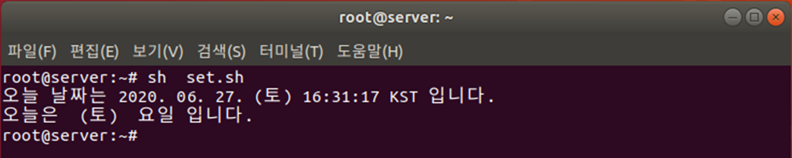

Bash 쉘의 주요기능
Quoting Rule
Quoting rule은 메타문자의 의미를 제거하고, 단순한 문자로 변경하여 처리하는 것을 말합니다.
Meta-Characters란?
메타케릭터는 쉘에서 특별히 의미를 정해 놓은 문자들을 말합니다.
-
\ ? ( ) $ … * * {} [] 등
-
*all character 의미를 가지고 있는 메타입니다.
hojin@hojin3:~$ ls
mydata.txt
hojin@hojin3:~$ echo *
mydata.txt
echo 명령과 * 를 같이 사용하게 되면 모든파일과 디렉터리를 출력하는 ls 명령과 유사합니다.
-
?는 any single character 의미를 가지고 있습니다.echo ??? # 3개의 글자를 가지는 모든 파일 -
{}집합 의미를 가지고 있습니다.hojin@hojin3:~$ touch file{1..3} hojin@hojin3:~$ ls file1 file2 file3 mydata.txt
단순 문자 변경
Quoting rule은 메타문자의 의미를 제거하고, 단순한 문자로 변경합니다.
-
backslash(
\)\바로 뒤의 메타 문자는 특별한 의미를 제거
hojin@hojin3:~$ touch \*\*\*
hojin@hojin3:~$ ls
'***' file1 file2 file3 mydata.txt
\*로 작성을 하면, \에 의해서 * 메타가 무시되기 때문에, *** 파일이 생성됩니다.
-
Double Quotes(
"")""내의 모든 메타 문자의 의미를 제거.
실습
hojin@hojin3:~$ touch "**"
hojin@hojin3:~$ ls
'**' '***' file1 file2 file3 mydata.txt
실습
hojin@hojin3:~$ touch "This is a File"
hojin@hojin3:~$ ls
'**' '***' 'This is a File' file1 file2 file3 mydata.txt
hojin@hojin3:~$
공백인 메타문자를 무시하고, 공백이 포함된 파일명이 생성되는 것을 볼 수 있습니다.
-
Single Quotes(
'')''내의 모든 메타 문자의 의미를 제거. 단$와''는 제외함
Nesting Command
명령어 안에 또 다른 명령어를 삽입할 때 사용합니다.
$()
리눅스 명령어를 $()로 묽어서 실행이 가능합니다.
hojin@hojin3:~$ echo "Today is $(date)"
Today is Sun Mar 26 17:54:20 KST 2023
백틱 문자
또는 백틱 ```으로도 가능합니다.
hojin@hojin3:~$ echo "Today is `date`"
Today is Sun Mar 26 17:55:47 KST 2023
nesting 응용예제
hojin@hojin3:~$ touch report-$(date +%Y%m%d)
hojin@hojin3:~$ ls
'**' '***' 'This is a File' file1 file2 file3 mydata.txt report-20230326
report에 현재날짜가 연결된 파일을 만들 수 있습니다.
set과 $(명령)
리눅스 명령을 결과로 사용하려면 $(명령) 형식 이용

-
결과를 파라미터로 사용하려면 set 명령 이용
-
2행: $(date)는 date 명령을 실행한 결과
-
3행: $(date)의 결과가 파라미터 변수 $1, $2, $3, …에 저장
- 4행: 네 번째 파라미터인 요일을 출력

Alias
Alias는 셀 명령에 새로운 이름을 부여하는 것을 말합니다.
등록된 alias 확인
alias 또는 alias 이름
실습: 전체 alias 목록
hojin@hojin3:~$ alias
alias alert='notify-send --urgency=low -i "$([ $? = 0 ] && echo terminal || echo error)" "$(history|tail -n1|sed -e '\''s/^\s*[0-9]\+\s*//;s/[;&|]\s*alert$//'\'')"'
alias egrep='egrep --color=auto'
alias fgrep='fgrep --color=auto'
alias grep='grep --color=auto'
alias l='ls -CF'
alias la='ls -A'
alias ll='ls -alF'
alias ls='ls --color=auto'
하나만 확인
hojin@hojin3:~$ alias ll
alias ll='ls -alF'
Alias 생성
alias는 기존의 셀 명령들을 조합하여 새로운 이름의 명령을 생성 합니다.
alias name='명령'
실습
hojin@hojin3:~$ alias c=clear
hojin@hojin3:~$ alias c
alias c='clear'
hojin@hojin3:~$ c
alias 삭제
unalias 이름
실습
hojin@hojin3:~$ unalias c
hojin@hojin3:~$ alias c
-bash: alias: c: not found
Prompt
현재 셀의 프롬프트 모양을 변경할 수 있습니다.
현재의 프롬프트 모양을 확인합니다. 프롬프트의 모양은 환경변수$PS1에 등록되어 있습니다.
hojin@hojin3:~$ echo $PS1
\[\e]0;\u@\h: \w\a\]${debian_chroot:+($debian_chroot)}\[\033[01;32m\]\u@\h\[\033[00m\]:\[\033[01;34m\]\w\[\033[00m\]\$
프롬프트 특수문자
PS1환경 변수에 적용할 수 있는 대표적 특수문자들 입니다.
\h: 호스트이름\u: 사용자이름\w: 작업 디렉터리 - 절대경로\W: 작업 디렉터리 - 상대경로\d: 오늘 날짜\t:현재 시간\$:$또는#프롬프트 모영
로그인과 환경변수 저장
alias 및 prompt등 환경변수에 등록되는 값는 로그아웃 되면 사라지게 됩니다. 이를 다시 로그인 할 때 기억하여 적용하기 위해서는 별도의 추가 등록 작업이 필요합니다.
hojin@hojin3:~$ ls -a ~
'**' .. .bashrc .profile 'This is a File' file3
'***' .bash_history .lesshst .sudo_as_admin_successful file1 mydata.txt
. .bash_logout .motd_shown .viminfo file2 report-20230326
hojin@hojin3:~$
사용자 디렉터리에 숨김파일 형태로 .bashrc 파일이 있습니다. 이곳에 적용할 설정들을 입력해 두면 됩니다.
hojin@hojin3:~$ vi .bashrc
Redirection
입출력 방향을 결정합니다.
대화 체널
컴퓨터는 키보드등 외부의 기기들을 통하여 입력 받는 것을 stdin이라고 합니다. 반대로 모니터등에 출력하는 것을 stdout이라고 합니다.

또한, 오류등이 발생된 경우 출력하는 것을 stderr라고 합니다.
bash셀은 이러한 입출력을 번호로 관리합니다.
- 0 : stdin
- 1: stdout
- 2: stderr
리다이렉션 의미
입출력 리다이렉션은 bash가 지정한 입출력의 번호를 다른 것으로 장치로 재매핑하여 변경하는 것을 말합니다.

-
리다이렉션 숫자(0,1,2)는 생략이 가능
-
>파일이 없으면 새롭게 생성. 기존에 파일이 있으면 교체 됩니다. -
>>파일이 없으면 새롭게 생성, 기존에 파일이 있으면 마지막 부분에 추가 됩니다.
에러 메시지 출력
stderr 와 리다리엑션을 통하여 에러 메시지를 별도의 파일 및 출력 제한을 할 수 있습니다.
에러 로그파일 만들기
hojin@hojin3:~$ ls aaa.txt
ls: cannot access 'aaa.txt': No such file or directory
hojin@hojin3:~$ ls aaa.txt 2> error.log
hojin@hojin3:~$ ls
'**' '***' 'This is a File' error.log file1 file2 file3 mydata.txt report-20230326
hojin@hojin3:~$
에러 메시지를 별도의 error.log에 기록을 하였습니다.
출력 제한 하기
리다이렉션으로 화면출력을 제한합니다.
hojin@hojin3:~$ ls file1 file100 2> /dev/null
file1
hojin@hojin3:~$
존재하는 file1은 출력이 되나 존재하지 않는 file100은 에러로 출력되지 않고, 쓰레기장 파일로 전송하여 소각합니다.
Pipeline
여러 명령들을 조합하여 사용하는 방법입니다.
명령어 체인
- 명령의 실행결과를 다음 명령의 입력으로 전달
- 리눅스 명령어를 조합하여 사용
명령1 | 명령2 | 명령3
명령1의 결과를 명령2의 입력으로 처리합니다. 명령2의 결과를 명령3의 입력으로 처리합니다.

실습
ls 명령으로 출력되는 파일의 줄수를 다시 wc로 카운팅 하는 동작
hojin@hojin3:~$ ls -l | wc -l
10